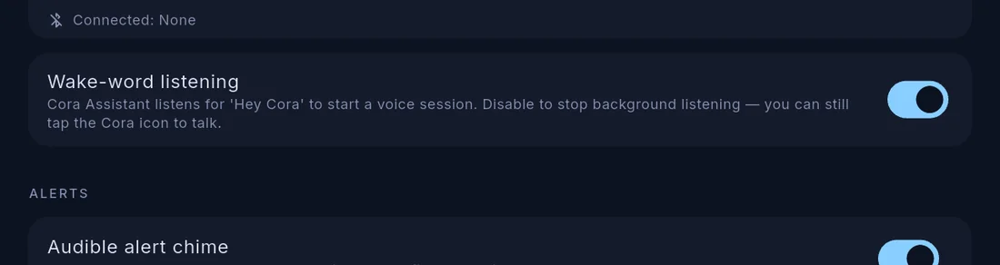

Talking to Cora
Cora Max takes voice, which is the easiest way to use it when your hands are wet or you are across the room.
Two ways to start
Say "Hey Cora". Cora Max listens in the background for the wake phrase and starts a session when it hears it.
Or tap the Cora swoosh in the top bar. Cora starts listening straight away, answers out loud, and keeps listening until you stop it.

Settings → Cora Max → Wake-word listening turns background listening off. Tapping the swoosh still works, which is the setting to use if you would rather the screen were not listening all the time.
Audio output in the same section chooses the internal speaker, a 3.5 mm connection or Bluetooth. The internal speaker is the weakest of the three for voice.
What to ask
Questions about the tank
- "What's my alkalinity?"
- "Has the temperature been stable today?"
- "When did I last change water?"
- "Why is pH lower than usual?"
Things to do
- "Turn the skimmer off."
- "Start feed mode."
- "Put the fan back on auto."
- "Log that I did a twenty litre water change."
Follow-ups. You do not need to repeat yourself — "and the frag tank?" works after a question about the display.
Child lock
Settings → Cora Max → Child lock blocks actuation from this screen. Questions and readings still work — Cora will answer what your alkalinity is, and refuse to switch the return pump off.
Use it on a screen within reach of children or visitors.
To unlock, either:
- press the volume key three times within two seconds, or
- hold five fingers in the top-right corner for ten seconds.
The two-second window is what makes it a lock rather than a suggestion — three presses at any spacing is something a child produces by accident. It is still a child lock, not a security lock: anyone who watches you do it can repeat it.
Confirmations
Anything that reaches your equipment is confirmed before it happens. Cora tells you exactly what it is about to do and waits for you to agree.
If an instruction is ambiguous — you have two heaters and said "the heater" — Cora asks which one rather than guessing.
What Cora can see
The same as on your phone: your live readings, how old each one is, your history, your journal and your lab results — for the tank currently on screen.
If a reading is stale, Cora says so instead of answering as though it were current.
Which tank Cora is talking about
Whichever tank the screen is showing. Switch tanks in the top bar first, or name the tank in your question.
Stopping
Say "stop", or tap to end the session. Cora stops listening when the session ends.
If it mishears
Reef vocabulary is hard, and equipment names are harder. If Cora repeatedly mishears a device, rename it in Devices to something more distinct — short, ordinary words work best.
If Cora does not respond
Settings → Wake-word diagnostics shows the detector working in real time: a live meter with the trigger threshold marked, so you can see whether your voice is reaching it and how close it comes to triggering.
Use it to check placement and background noise. A unit that never approaches the threshold is usually too far away, or competing with a noisy sump.
Written for Cora Max 0.28.36 and Cora Mobile 0.5.54.
Still stuck? Email cora@coraiq.tech and we'll help.